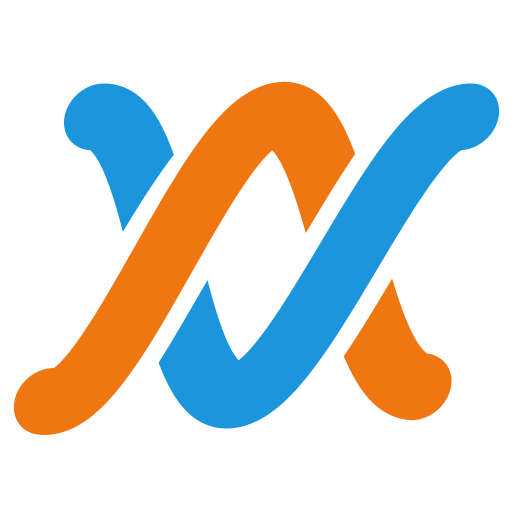

Instrument panelThe studio at 1440 × 900, Night Shift open: you tapped a beat over bars 5–6 and Claude is offering three takes on the bass.


Night Shift
005.3.1
0:13.04bar.beat
bpm92
time4/4
keyAm
out
snap
Click a clip and press 0 to stop it playing. Drag across bars to point the agent at them.
Walk 2 is off: the bass sits out bars 5–8.
Sketch
Notes
Beat
Devices
Mixer
Tapping into the song: bars 5–6, looping, with the click
HumH
TapT
PlayP
RecordR
Pass 2 of your beat. Tap along; each loop adds to the last until you stop.
1
2
3
4
KickF
say "b" or "boom"SnareJ
say "k" or "psh"HatK
say "ts" or "t"OpenL
say "tss"
snap
Takes3 in this session, never wiped
Take 3, tappedjust now
8 hits over 1 bar at bar 5. Your timing kept.
Take 2, hummed 7 notes, A minor07:46
Take 1, played guitar, bars 5–607:41
History, the parts list, and the phoneHistory is a track sheet: one line per change, signed in the author's ink. The phone shows the same arranger with Claude's takes in a sheet.
Lamps the only authorship mark
Warm, lit: a person played or changed it
Cool, lit: an agent did
Unlit: the house (demos, Band)
Cream: this is on, or selected
Leader green: playing
Red: recording
Grease pencil: the loop, or what the agent is pointing at
Keys pressed in = inverted
Surfaces planes and hairlines, no cards
well
room
panel
pane
raised
paper
Type three faces, six sizes in the studio
display 26A B This is Night Shift.
readout 24005.3.1 92 −16.3 LUFS
title 17Night Shift
body 13.5Two takes over your bass in bars 1–4. Hold one to hear it with the song.
ui 13 / 12Drums Keep on Drums Gobo Kit
data 11read Bass, Walk, bars 1–4: 14 notes
silkscreen 10bpm time key snap out
No stripesNothing with text in it gets a coloured edge. Who did it is a lamp and the ink of their name.
No cardsRegions are planes split by hairlines. Only the toast and the sticker float.
No pillsToggles are square keys that press in. Statuses are a lamp and a word.
No sparkleThe agent is "Claude" in cool ink. Icons only for the three transport glyphs.
Night Shift
3.3.1
Claude
Two takes over your bass, bars 1–4. Hold one to hear it with the song.
Song
Sketch
Agent
History
The landing page, first screenNo badge, no eyebrow, no glow. The overprinted line, the Weave at the record head, and the four ways in drawn as input jacks.
Play over each other.
you
your agent
Overdub is a studio in your browser. You hum, tap or play a part into the song and your agent plays over it, take after take. Every take is signed, so you can undo the agent's and keep your own.
hum
tap
play
say
Four ways in. Sing the hook, tap the beat on your keyboard, play a MIDI keyboard or guitar, or tell the agent how it should feel.